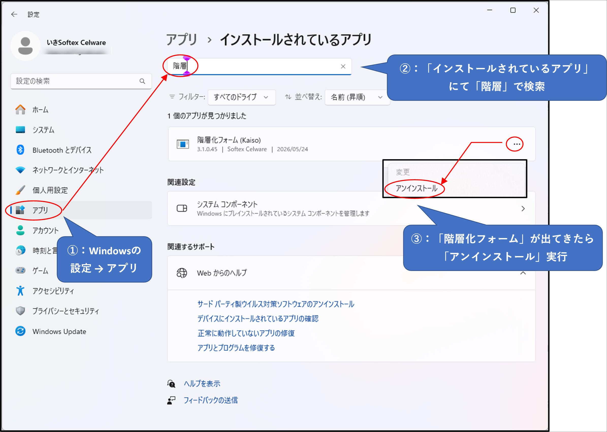

Excel VBA プロジェクトを解析し、プロシージャ・宣言メンバーの階層・参照関係を可視化する VSTO アドイン
v3.1.0.45
本アドインは現在 自己署名証明書 で署名されています。そのため初めて使う PC では、
先に証明書を登録しておかないと、インストール時に
System.Security.SecurityException（配置マニフェストの証明書が信頼されていません）
が出て インストールできません。
下のバッチをダウンロードしてダブルクリックするだけで、自動で証明書が登録されます（管理者権限は不要）。
install_cert.cmd をダウンロード → ダブルクリックで実行Done. と表示されたら登録完了。任意のキーで閉じる
※ 検証後にこの証明書を削除したい場合は
uninstall_cert.cmd をダウンロードして実行してください。
※ 手作業で登録したい場合は IkiKaiso.cer をダウンロードし、
証明書ウィザードで「現在のユーザー」→「信頼されたルート証明機関」と
「信頼された発行元」の両方にインポートしてください。
setup.exe を実行| 項目 | 要件 |
|---|---|
| OS | Windows 10 / 11 |
| Excel | 2016 以降 (Office 365 含む) — 32bit / 64bit いずれも可 |
| .NET Framework | 4.8 (Windows 10 1903+ / Windows 11 は標準搭載) |
| VSTO Runtime | Visual Studio 2010 Tools for Office Runtime (未導入時は setup.exe が自動インストール) |
新バージョンがリリースされると、Excel 起動のたびに更新ダイアログが表示されます。 「OK」を押すと更新が適用されます。
すぐに最新版を取りたい場合は、Excel リボンの 「開発」 タブ → 「階層化フォーム」 グループの 「更新確認」 ボタンをクリックしてください。 VSTO インストーラが起動し、新版があれば更新、なければ「既にインストール済み」と表示されます。 更新後は Excel の再起動が必要です。
Windows の 設定 → アプリ → インストールされているアプリ で 「階層化フォーム (Kaiso)」を検索し、…（三点メニュー）→ アンインストール を選択してください。 複数エントリが表示される場合は全て削除してください（インストール元の異なるエントリが残っていると、再インストール時に衝突します）。

STEP 1 で登録した自己署名証明書も削除したい場合は、次のいずれかの方法で削除します。 アドインを再インストールする予定があるなら、証明書は残しておいて構いません。
方法 A: バッチで自動削除 (推奨)
uninstall_cert.cmd をダウンロード → ダブルクリックで実行Done. と表示されたら削除完了方法 B: 手作業で削除
certmgr.msc と入力して OK※ どちらの方法でも管理者権限は不要です（現在のユーザーストアからの削除のため）。
| 症状 | 対処 |
|---|---|
| 「開発」タブに「階層化フォーム」グループが出ない | ① Excel → オプション → リボンのユーザー設定 で「開発」タブが有効か確認。 ② Excel → オプション → アドイン → 管理: 使用できないアイテム で IkiKaiso を有効化。または管理: COM アドイン で IkiKaiso にチェック |
| 「VBA プロジェクトモデルへのアクセスは信頼されていません」エラー | 上記の Excel 信頼設定が未設定。設定後 Excel 再起動 |
| 「発行元を確認できません」警告 | 自己署名証明書のため正常。「インストール」で進めて OK |
| SmartScreen 警告 | 「詳細情報」→「実行」で進めて OK |
| 自動更新が来ない | Excel を再起動 / リボンの「更新確認」ボタンで手動チェック / 本ページにアクセス可能なネットワーク環境か確認 |